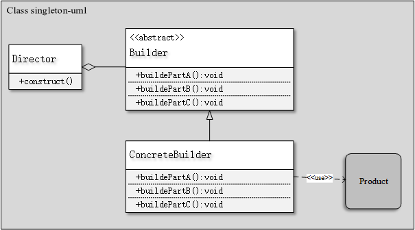

创建型模式
简约的理解创建型模式就是和创建对象相关的设计模式,它主要包含了6种设计模式：
1) 单例模式
2) 建造者模式
3) 原型模式
4) 简单工厂模式
5) 工厂方法模式
6) 抽象工厂模式
1、单例模式(Singleton)
定义：确保某一个类只有一个实例,而且自行实例化并向整个系统提供这个实例.
UML类图:
其中Client——高层客户端;Singleton——单例类
实现单例模式的几个关键点：
1) 构造函数不对外开放,一般为private
2) 通过一个静态方法或者枚举返回单例类对象
3) 确保单例类对象只有一个
4) 确保单例类对象在反序列化时不会重新构建对象.
单例模式实现方法
实现单例模式有饿汉单例模式、懒汉单例模式、DCL实现单例、静态内部类单例模式、枚举单例、容器实现单例模式.
饿汉单例模式：在类中声明一个静态对象并初始化,对外开放一个静态方法用于返回该静态对象,以此实现单例模式.
懒汉单例模式：在类中声明一个静态对象,并且在用户第一次调用getInstance()方法时才对其进行初始化.这里和饿汉单例模式的区别就在于单例对象创建的时间不同.其优点在于只有在使用时才会被实例化;其缺点就是第一次加载时需要及时实例化,反应稍慢,最大的问题就是每次调用getInstance方式都需要进行同步.
Double Check Lock（DCL）实现单例: DCL方式实现单例模式的优点就是即能够在需要时才初始化单例,又能够保证线程安全,且单例对象初始化都调用getInstance不进行同步锁.
具体为在getInstance方法中采用两层判断:第一层判断是为了避免不必要的同步;第二层的判断则是为了在null的情况下创建实例.
静态内部类单例模式：这种方式不仅保证线程安全,也能够保证单例对象的唯一性,同时也延迟了单例的实例化.
2、建造者模式(Builder)
定义：将一个复杂对象的构建和它的表示分离,使得同样的构建过程可以创建不同的表示.
使用场景：
1) 相同的方法不同的执行顺序,产生不同的事件结果;
2) 多个部件或者零件,都可以装配到一个对象中,但是产生的运行结果又不相同时;
3) 当初始化一个对象特别复杂,如参数多,且很多参数都具有默认值时.
UML类图：
1) Product产品类——产品的抽象类;
2) Builder——抽象Builder类,规范产品的组建,一般由子类实现具体的组建过程;
3) ConcreteBuilder——具体的Builder类,实现产品每个组件的建造过程.
4) Director——统一组装过程(在平时使用时,通常不要这个类)

优点：良好的封装性,使用建造者模式可以使客户端不必知道产品内部组成的细节.易扩展
建造者模式实现
|
|
原型模式(Prototype)
定义：用原型实例指定创建对象的种类,并通过拷贝这些原型创建新的对象.
使用场景：(1)类初始化需要消化非常多的资源,这个资源包含数据、硬件资源等,通过原型拷贝避免这些浪费;
(2)通过new产生一个对象需要非常繁琐的数据准备或者访问权限;